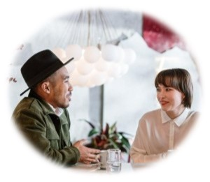

DATE NIGHT
GOING OUT
STAYING IN
Great Date Questions
Awkward silence is the killer of promising first dates. Fortunately for us, Vanessa Van Edwards and the folks over at Science of People have researched 13 great first-date questions to ensure you never have to endure that painful silence! The only thing worse is bad small talk. These tips will help you banish both from your dates.
According to research, a flexible communication style—engaging questions, open-mindedness and easy back and forth is most effective. Below, are a few favorite questions and conversation starters. Here is what they will do for you:
- help you to guage more quickly if you have a connection
- get to know their personality, history and areas of compatibility more quickly
- encourage great conversation
Four Best First Date Conversation Starters:
Are you working on any personal passion projects?
This is a great go-to question and it comes up very naturally if someone talks about being busy, what they do for a living, or their hobbies. It can transition you into a broad conversation about how they spend their time and sounds much better than "What are your hobbies?"
What does a typical day look like for you?
Don't ask, "What do you do?" Instead, asking about their typical day will give you much more robust answers and you will learn far more about them.
Is there anything you don't eat?
Since we're doing dinner and a movie, this one will be easy. It can produce some fun conversation and might provide you with some great tidbits.
What sort of vacations do you like to take?
People often ask, "Have you gone on any vacations recently?" However, someone can answer that very quickly or they might not have gone anywhere (which can result in awkward silence). Asking about their likes produces conversation and can even get you a second date! Professor Richard Wiseman conducted a study and found that 18% of couples who discuss travel went on a second date, compaired to 9% of couples who talked only about movies.
Read more at: www.scienceofpeople.com